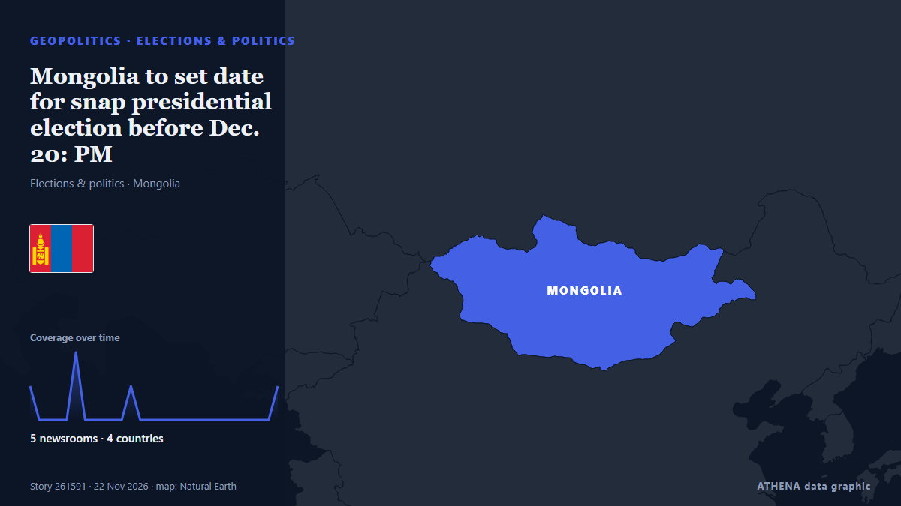

Elections & politics
SponsoredPresented by  Cybernetics and Artificial Intelligence Lab Welcome to the Cybernetics and Artificial Intelligence Laboratory, established at the Department of Business Administration of the National and Kapodistrian University of Athens. The lab is headed by Professor Dimitrios Thomakos. The lab aims to do research that can be published in top venues. Our research uses tools and methods of Artificial Intelligence, and lies in the following areas: - Forecasting - Decision making - Cyber security - Finance We are always looking forward to collaborating with exceptional students!
Cybernetics and Artificial Intelligence Lab Welcome to the Cybernetics and Artificial Intelligence Laboratory, established at the Department of Business Administration of the National and Kapodistrian University of Athens. The lab is headed by Professor Dimitrios Thomakos. The lab aims to do research that can be published in top venues. Our research uses tools and methods of Artificial Intelligence, and lies in the following areas: - Forecasting - Decision making - Cyber security - Finance We are always looking forward to collaborating with exceptional students!
| 9 Nov | 0 |
|---|---|
| 10 Nov | 0 |
| 11 Nov | 0 |
| 12 Nov | 0 |
| 13 Nov | 1 |
| 14 Nov | 1 |
| 15 Nov | 0 |
| 16 Nov | 0 |
| 17 Nov | 2 |
| 18 Nov | 5 |
| 19 Nov | 8 |
| 20 Nov | 3 |
| 21 Nov | 0 |
| 22 Nov | 0 |

Mongolia to set date for snap presidential election before Dec. 20: PM
Mongolia is preparing for its first early presidential election after President Khurelsukh Ukhnaa resigned amid corruption allegations, having called for constitutional reform before leaving office. from Euronews English
French ex-PM Villepin announces presidential run
France's former prime minister and foreign minister Dominique de Villepin, famed abroad for his excoriating 2003 denunciation of US plans for invading Iraq, said Friday he was running for president. from The Local France
UK anthem returns to the EU stage in symbolic post-Brexit moment
UK Prime Minister Andy Burnham was welcomed by EU leaders in Brussels for a summit aimed at strengthening post-Brexit relations. from Euronews English
UK and EU strike ‘landmark’ deal to rebuild ties after Brexit
🇬🇧🇪🇺 A fresh start after #Brexit? The #UK and #EU have agreed on a landmark #deal to rebuild ties, following a summit in Brussels this Friday. from France 24 English
Crime Costs Brazil US$74B as Lula Waits
Lula says he will name ministers on his own timetable, while a new study puts the 2025 cost of crime in Brazil at about US$74 billion, or 3.5% of GDP. from The Rio Times
Trump pushes decision on new Iran strikes into next year: ‘We’ve got time’
Trump had previously suggested Iran would be more willing to make a deal after the US midterms, which Republicans lost. from The Jerusalem Post
Saudi Arabia Ranks First Globally in Digital Government Services, Achieving Vision 2030 Target
The Kingdom ranks first among 194 countries and territories assessed by the United Nations for online government services and rises to fourth place worldwide in overall e-government development… from Tirana Times
Spanish PM Sanchez admits to 'mistakes' 10 days before elections
Socialist Prime Minister Pedro Sanchez was attacked over his track record by his conservative rival, Alberto Nuñez Feijoo, during a televised debate on Thursday. from Le Monde (English)
French 2027 presidential race: Green leader Tondelier draws closer to hard-left Mélenchon
Six months before the first round of France’s presidential election, Green party leader Marine Tondelier is moving closer to Jean-Luc Mélenchon, the leader of the radical left. from France 24 English
Nigeria moves to end jail terms for attempted suicide
Nigeria's proposed reform follows years of calls from psychiatrists and a parallel Senate bill. from BBC News
DOJ seeks to dismiss Alaska election certification lawsuit
Federal lawyers asked an appeals court to drop its lawsuit asking to block the certification of Alaska' s Senate election. from UPI World News
PM Pashinyan: Preliminary draft of Armenia's new constitution will publicized next week
The preliminary draft of Armenia's new constitution will be made public next week, Prime Minister Nikol Pashinyan announced at Thursday’s Cabinet meeting of the Armenian government. from NEWS.am (English)
Congress has decimated idea of BJP: Rahul Gandhi
Washington: Congress leader Rahul Gandhi has said that his party has decimated the idea of the BJP politically and the effect will be seen over the next eight months. from Deccan Herald
Trump says no rush on Iran decision, looks to next year
US President Donald Trump on Thursday appeared to push a decision on renewed major strikes against… from BusinessWorld
Tashima says no plan 'at this point' to step aside in FIFA election race
Kozo Tashima said he had no immediate plans to withdraw from the Fifa presidential race, despite European backing for Philippe Diallo as the stronger challenger to Gianni Infantino. from Free Malaysia Today
Musk feels ‘pretty foolish’ over spending on Republicans
NEW YORK: Elon Musk said on Wednesday he felt “pretty foolish” about the amount of money he spent on this year’s US midterm elections after Republicans suffered sweeping losses. from Dawn
Serbia elects academic as parliament speaker
Among his first tasks will be calling a snap presidential election. from Euractiv
Mary Peltola wins in Alaska, securing 56-44 US Senate majority for Democrats
It's nine Senate seats flipped by the Democrats, most since 1958. from Times of India (World)
UAE candidate says her 'bridge builder' skills make her the woman to lead UN
Lana Nusseibeh, the Emirati candidate vying to become the next UN secretary general, told AFP she believes she is a "bridge builder" who can effect a positive change at a crucial time for the… from Al-Monitor